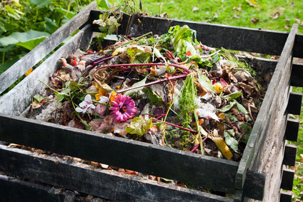
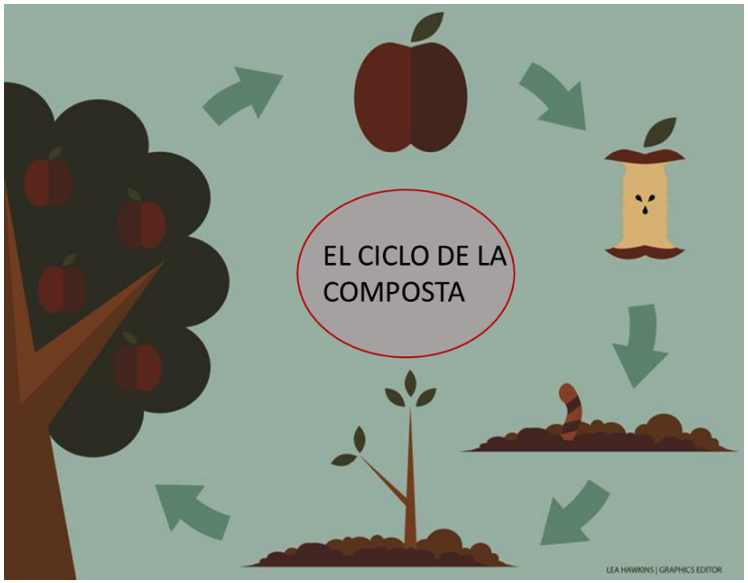
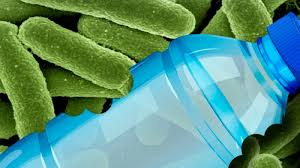

Integrantes
- 4IV9
- Gomez Calixto Emilio Eduardo
- Mendoza Vargas Yadira
- Ochoa Velazquez Natalia
- Velasco Cardoza Joselyne
¿Qué es Millo's?
Millo's es una iniciativa enfocada en promover el uso responsable de los residuos orgánicos mediante la elaboración de composta y el uso de microorganismos eficientes. Nuestro objetivo es reducir la contaminación y enriquecer los suelos de forma natural.
¿Qué es la composta?
La composta es el producto de la descomposición de residuos orgánicos como cáscaras, frutas, hojas y restos vegetales. Es un abono natural rico en nutrientes que mejora la salud del suelo.
Proceso del compostaje
El proceso implica recolectar residuos orgánicos, mezclarlos, airearlos y esperar a que los microorganismos los transformen en abono.
Microorganismos útiles
Microorganismos como bacterias y hongos descomponen los residuos. Son esenciales para convertir la materia orgánica en nutrientes para el suelo.
Beneficios del compostaje
- Disminuye la cantidad de basura orgánica
- Reduce gases de efecto invernadero
- Mejora la estructura del suelo
- Aporta nutrientes naturales a las plantas